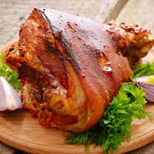

German cuisine is more than just beer and bread. German food is tasty and satisfying without feeling heavy. The cuisine is in accordance with the cold weather of the country.Try out the variety of food here from traditional to the modern.
Currywurst is a fast food dish consisting of steamed, then fried pork sausage
typically cut into slices and seasoned with curry ketchup,a sauce based on
spiced ketchup or tomato paste,itself topped with curry powder,
or a ready-made ketchup seasoned
with curry and other spices.
The dish is often served
with French fries.
Black Forest gateau and Black Forest cake are the English namesfor the German dessert
Schwarzwalder Kirschtorte literally "Black Forest cherry-torte",where it originated.
Typically, Black Forest gateau consists ofseveral layers of chocolate sponge cake
sandwiched with whipped cream and cherries.
It is decorated with additional whipped cream, maraschino cherries,
and chocolate shavings
Sauerbraten (German: "sour roast" from sauer for "sour" or "pickled"
and Braten for "roast meat") is a German pot roast
that can be prepared with a variety of meats,most often beef, but also from
venison, lamb, mutton, pork, and traditionally, horse.
Before cooking, the cut of meat is marinated for several days
(recipes vary from three to ten days)
in a mixture of
vinegar or wine,
water, herbs,
spices, and seasonings.
The recipe for Thuringian bratwurst, as enjoyed by Goethe,
is 600 years old. But aside from the pork, marjoram, caraway and garlic,
the full recipe remains a closely guarded secret among the 3,000 or so
Thuringian butchers. All we do know is that the sausages have to be cooked
over hot charcoal and weigh around 150g.
Thuringia's ultimate fast food simply has to be accompanied by
authentic Thuringian mustard.
At Germany's first bratwurst museum, in Arnstadt,
you can see the earliest known documentation of bratwurst,
which dates from 1404.
A Berliner Pfannkuchen is a traditional German pastry similar
to a doughnut with no central hole, made from sweet yeast dough
fried in fat or oil, with a marmalade or jam filling and usually
icing, powdered sugar or conventional sugar on top..
Ideally, eisbein is used with reference to salt-cured pig knuckles
which are simmered for a long time. It is also otherwise known as the knuckle -
is a dish made out of meat, usually from the pig.
Meat in this case is specifically cut out from the knees or
the joint of elbows and tarsal. The fat content in these regions
is quite high and the meat is characterized by tenderness and being aromatic.

Goose has a distinct flavor which makes it a favorite European Christmas dish.
In Germany, roasted goose is a staple for Christmas Day meals.
For European cultures, roasted goose is traditionally only eaten on appointed holidays,
including St. Martin's Day.
Roast goose is also a popular ingredient for post-Christmas meals.
There are a number of recipes for
Boxing Day which make use of
left over roasted goose from
one's Christmas Day banquet.
A schnitzel is meat, usually thinned by pounding with a meat tenderizer,
that is fried in some kind of oil or fat.
The term is most commonly used to refer to
meats coated with flour, beaten eggs
and bread crumbs, and then fried, but
some variants such as Walliser Schnitzel
are not breaded. Originating in Austria,
the breaded schnitzel is popular in Germany
and surrounding countries and made using either veal,
mutton, chicken, beef, turkey, reindeer,
or pork. It is very similar to the French dish escalope,
and the milanesa of Uruguay and Argentina.
Guten Appetit !